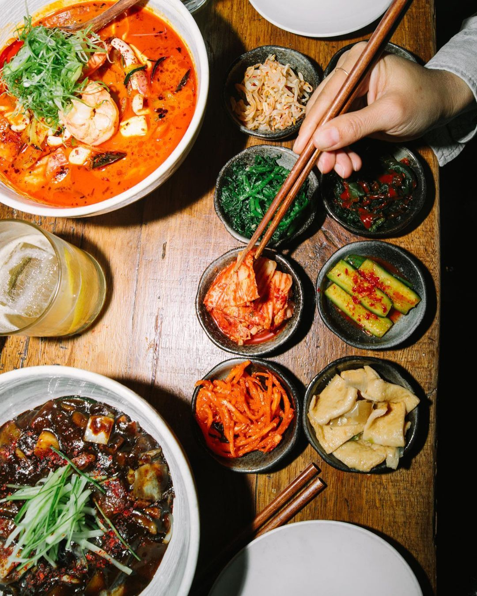

James came to Lisbon as a television producer. He had lived in Korea, the US, and Canada. When he started bringing Korean clients to Portugal, he noticed something was off. There was Korean food in the city, but it didn't taste like Korea.
So he opened Pabul. Not out of ambition, not out of necessity: out of conviction.
"Even if I lose money, I'm not going to lose for the Korean food culture."
The name comes from pa-bulgogi: pa means green onion, bulgogi is the marinated beef dish Korea is known for. He shortened it to Pabul. Easy to say, impossible to forget.
A little secret
If you walk in and already know what Pabul means, the first drink is on the house.
파불
Everything you see in the restaurant — the paintings, the posters, the colours — was made by James. Blue and red, like the Korean flag. Because food is never just food.
All five senses together. That's what he's trying to serve.
Pabul has been open for a little over a year. It's small, on a quiet street in Baixa, and it's exactly where it's supposed to be.
Korea. Cooked with soul.